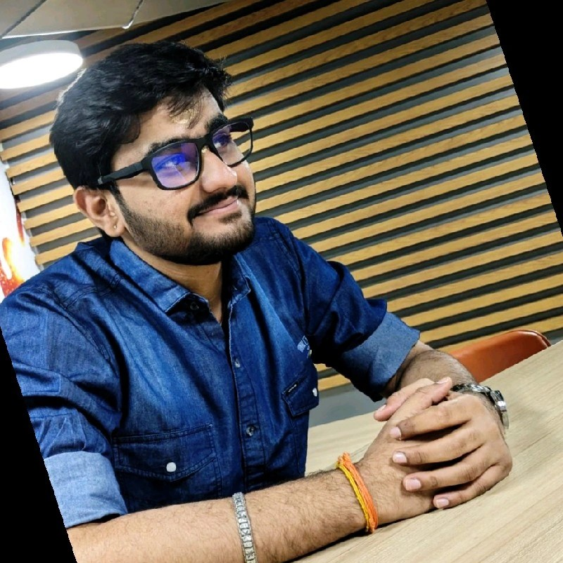

Senior Software Engineer at Bosch specializing in CAE applications with expertise in AI/ML, LLMs, and enterprise solutions. Passionate about building intelligent systems and scalable software solutions that solve real-world engineering problems.

I'm a Senior Software Engineer in the CAE domain at Bosch, working on CAE applications (ITE) with a focus on UI-driven prototyping and system integration. I have strong foundations in C, C++, Java, and Python, with hands-on experience in AI/ML, PyTorch/TensorFlow based model training and deployment, Generative AI, and Large Language Models (LLMs).
Experienced in building and integrating enterprise applications using Angular, Django, Flask, Spring Boot, and managing data with MongoDB, SQL, and PostgreSQL. I'm actively exploring AI-driven systems and scalable software solutions, with a strong interest in applying machine learning to real-world engineering problems.
Education: Bachelor of Engineering in Computer Science from KLE Technological University, Hubballi (2019-2023) with a CGPA of 9.41.
Years Experience
Projects Completed
Certifications
Awards at Bosch
3 Years | Aug 2023 - Present
6+ Months | Jan 2023 - Aug 2023
End-to-end chatbot implementation with low latency and high accuracy SQL DB Agent. Integrated with Databricks, ingested data into SQLite in-memory DB, and developed engaging UI using React. Improved overall user experience significantly.
Implemented object detection model for tracking number plates using YOLOV5 Framework. Utilized advanced OCR techniques to extract text with over 95% accuracy for both two and four-wheeler vehicles.
KSCST-funded research project for identifying late leaf spot and rust disease. Achieved 99% accuracy in image classification and 95% accuracy in fertilizer recommendations. Collaborated with UAS Dharwad to improve agricultural outcomes.
Built and maintained enterprise web application for CAE simulations. Owned feature implementation for Digital Conclusion, Google Sheets integration, and Footnotes Manager. Contributed to Angular library cae-ngx for internal projects.
Implemented various internal tools using Large Language Models and MCP servers for Artifactory management. Streamlined internal workflows and improved development efficiency.
Implemented the Linking Loader algorithm in C++ demonstrating how linking and loading processes are carried out in operating systems. Combines and resolves external references between modules to produce executable programs.
I'm always open to discussing new projects, creative ideas, or opportunities to be part of your vision.